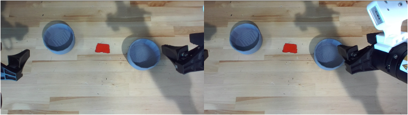

Conventional depth camera
Stereo reconstruction
Large Scale Monocular Datasets
StereoEngine
CRAFT turns just a couple of real robot demonstrations into a large, visually diverse training set by generating photorealistic robot videos with a video diffusion model.
Real robot data is expensive to collect and lacks visual variation, so policies struggle under new lighting, backgrounds, object positions, or camera views.
Guide a video diffusion model with canny-edges from simulation to synthesize new, action-labeled demonstrations across six augmentation axes.
Left Video
Warped Right Video
Masked Right Video
Generated Right Video
Moves every left pixel to its position in the right view, giving a warped right video and a mask marking the pixels no left pixel could reach.
Fills the masked region using the warped video, mask, and language instruction.
Produces a right video that pairs with the original ground-truth left video.
Example 1
Example 2
Example 3
Example 4
Example 5
Example 6
Left Simulation Video
Left Canny Video
Right Simulation Video
Right Canny Video

Reference Images
Generated Left Video
Generated Right Video
Render the episode in simulation from two cameras, then convert both views into Canny-edge videos.
Pass both edge videos to the model with two reference images and a language instruction. Edges define geometry; the references supply background, lighting, and surface texture.
A video generation model produces the synthetic left and right videos as a stereo pair.
Stack Two Bowls
Lift Two Bottles
Container Plate
We run each task 20 times on the real robot. StereoEngine-L uses generated stereo data to mid-train ExStereo, while StereoEngine-S uses task-specific generated data to train ExStereo and StereoVLA.